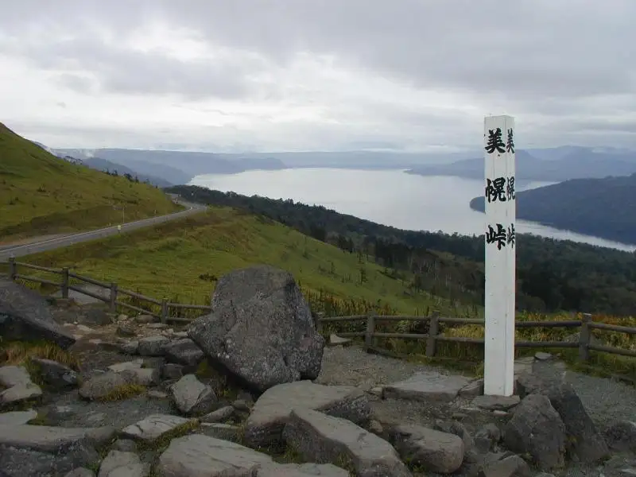
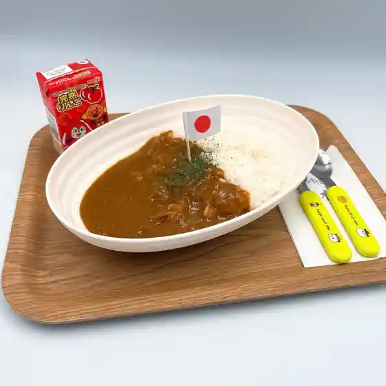
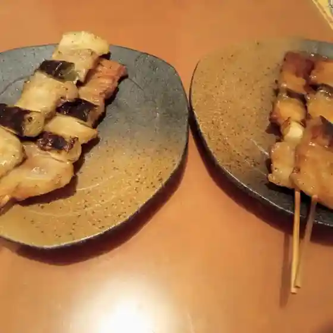
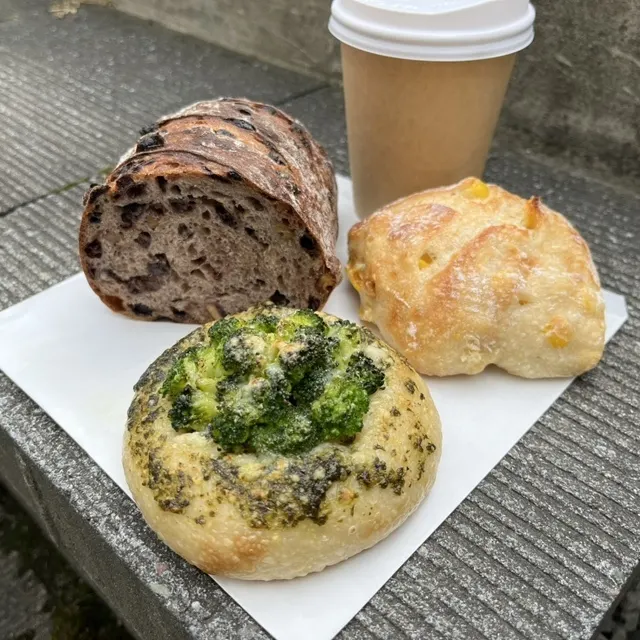
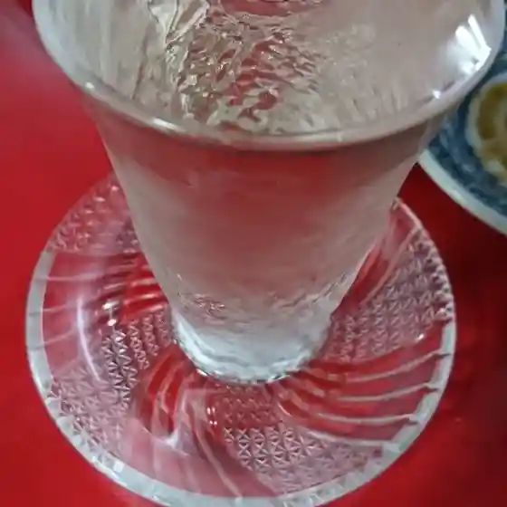
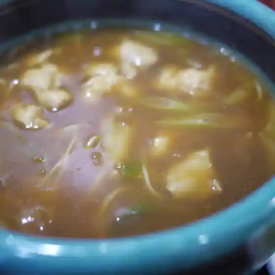
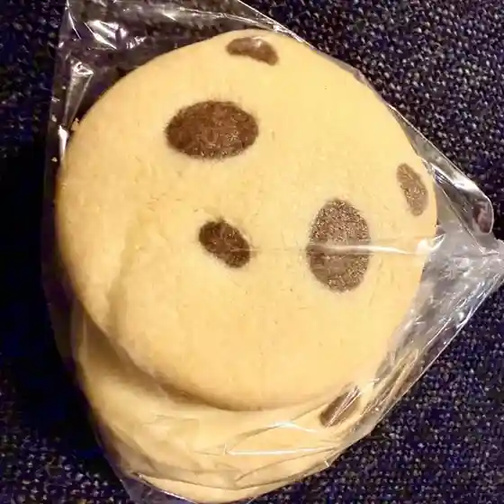
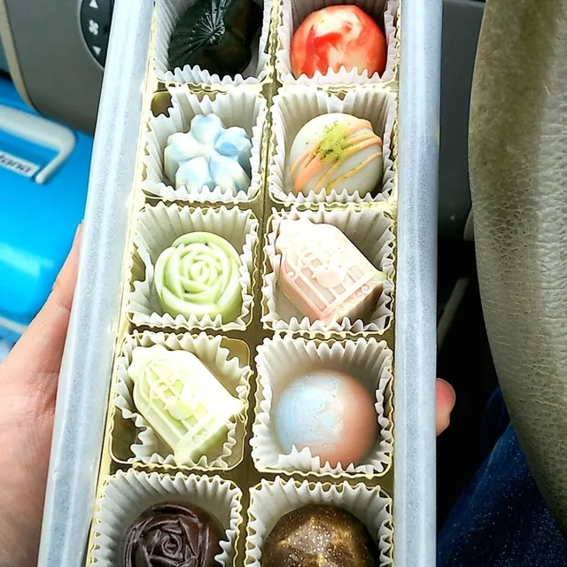

Bihoro
Bihoro · Hokkaido
Bihoro
Highlighted on the Hokkaido map.

Stay
ビジネスホテルＡＲＭ美幌
Bijinesuhoteru A R M Bihoro
Dining
肉の割烹 田村 本店

Niku No Kappou Tamura Honten
つぼ八 美幌店

Tsubo Hachi Bihoro Mise
ネウサラベーカリー

Neusarabeekarii
北のいざかや 實松

Kita Noizakaya Jitsu Matsu
千両庵

Senryou Iori
セイコーマート 美幌稲美店

Seikoomaato Bihoro Inami Mise
小麦の奴隷 美幌峠店

Komugi No Dorei Bihoro Touge Mise
オホーツク・ショコラッティエ

Ohootsuku Shokoratteie
ミートテック
Miitotekku
遊食館
Yuu Shoku Kan
北の珈琲工房 時計台
Kita No Koohii Koubou Tokeidai
ラーメン寶龍 美幌店
Raamen Houryuu Bihoro Mise
肉と魚の匠
Niku To Sakana No Takumi
浅草軒 本店
Asakusa Ken Honten
シティ びほろ店
Shitei Bihoro Mise
キッチンカーたこ焼き おかん
Kitchinkaa Tako Yaki Okan
気楽家
Kiraku Ie
たこ焼き 夜行
Tako Yaki Yakou
ぶらっさむ
Burassamu
すき家 243号美幌店
Suki Ie 243 Gou Bihoro Mise
なごり雪
Nagori Yuki
居酒屋 凪
Izakaya Nagi
オレンジハウス
Orenjihausu
華鳳
Hana Ootori